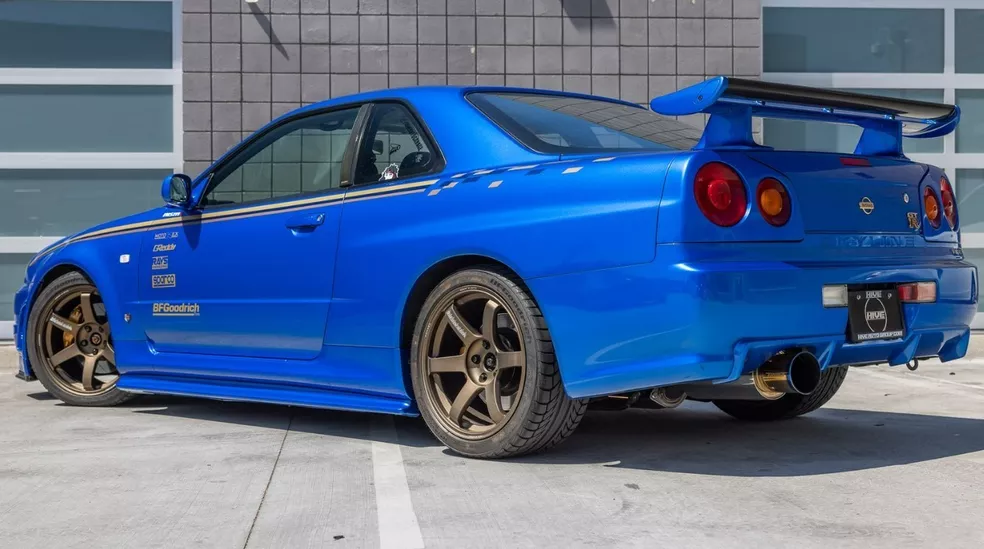

Para vc cuidar do seu jdm vc precisa cuidar mais do que um carro normal o carro jdm ja sao mais antigo por isso devemos cuidar melhor por ex:gtr r34 um motor biturbo de 396 hp v6 em linha no brasil esse carro é proibido, so tem um carro desse legalizado esta em londrina no parana. valor estimado de 2.900.000 milhoes
Acontece que, por causa das leis americanas de importação de carros usados, os Skylines R34 não podem ser trazidos para os EUA até 2024 E este é apenas um dos 14 veículos que puderam pisar em solo norte americano, trazidos pela MotorRex.
